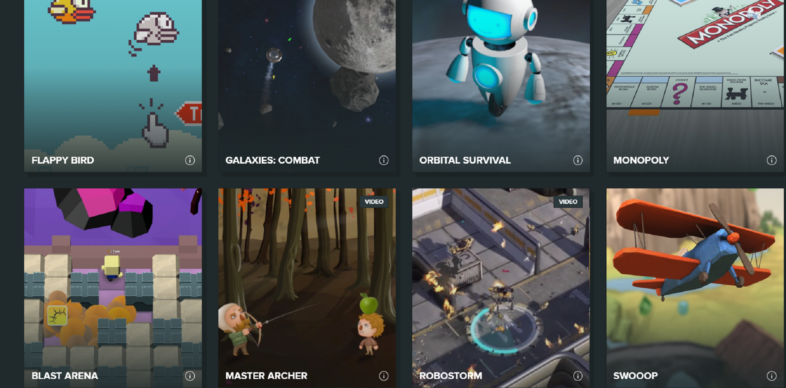
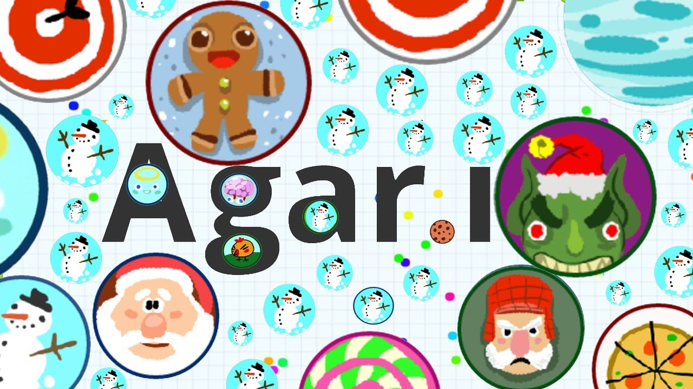
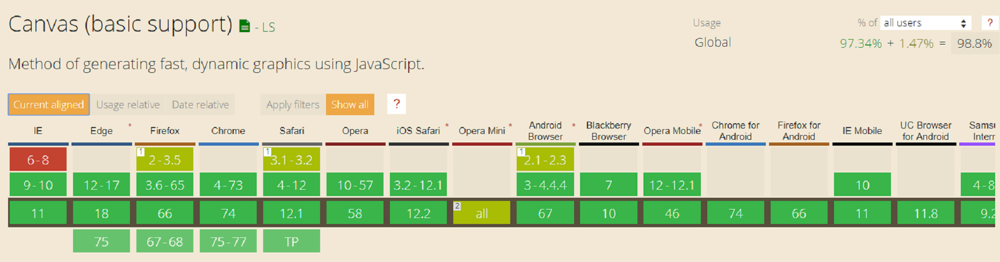
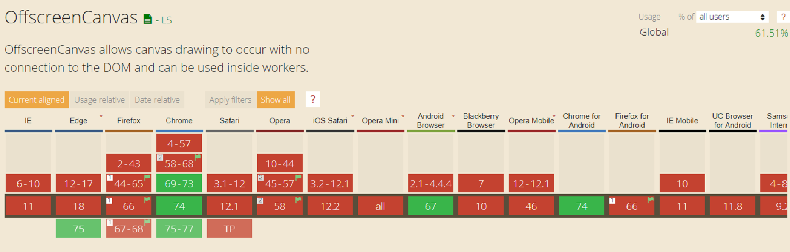

Canvas
Games created using canvas

Games created using canvas

browsers support

browsers support

Let's try to create a simple breakout game using canvas

Step 1:
a playing field and moving ball creating
Step 2:
the ball bouncing off the walls
Step 3:
the interactive paddle
Step 4:
"game over"
Step 5:
bricks creating
Step 6:
bricks destruction
Step 7:
counting the score
Step 8:
listening for mouse movement
Step 9:
giving the player some lives
Prepared by Alexandrina Lizurchik
Full code of the game